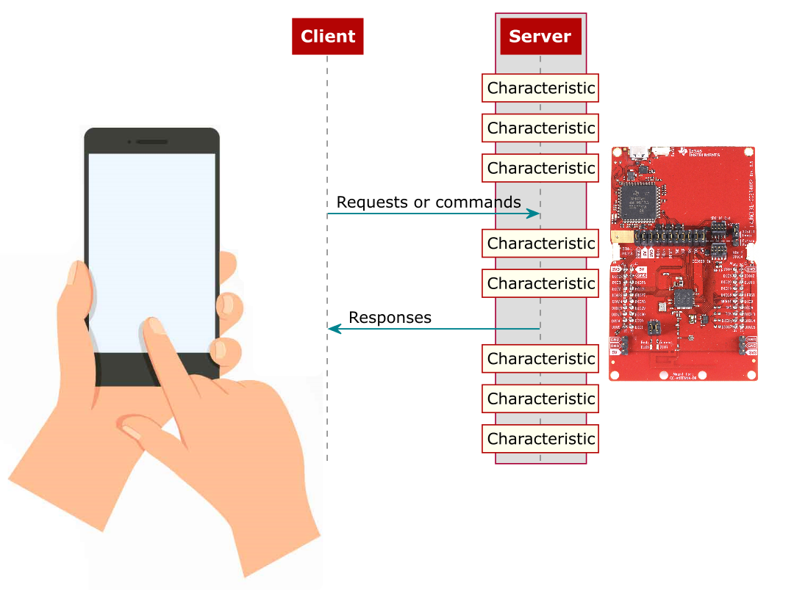

Generic Attribute Profile (GATT)¶
Just as the GAP layer handles most connection-related functionality, the GATT layer of the Bluetooth Low Energy protocol stack is used by the application for data communication between two connected devices. Data is passed and stored in the form of characteristics which are stored in memory on the Bluetooth Low Energy device. From a GATT standpoint, when two devices are connected they are each in one of two roles.
The GATT server
the device containing the characteristic database that is being read or written by a GATT client.
The GATT client
the device that is reading or writing data from or to the GATT server.
Fig. 8 shows this relationship in a sample Bluetooth low energy connection where the peripheral device (that is, a TI LaunchPad) is the GATT server and the central device (that is, a smart phone) is the GATT client.

Fig. 8 GATT Client and Server Interaction Overview
The GATT roles of client and server are independent from the GAP roles of peripheral and central. A peripheral can be either a GATT client or a GATT server, and a central can be either a GATT client or a GATT server. A peripheral can act as both a GATT client and a GATT server.
GATT Services and Profile¶
A GATT service is a collection of characteristics. For example, the heart rate service contains a heart rate measurement characteristic and a body location characteristic, among others. Multiple services can be grouped together to form a profile. Many profiles only implement one service so the two terms are sometimes used interchangeably.
GATT Characteristics and Attributes
While characteristics and attributes are sometimes used interchangeably when referring to Bluetooth Low Energy, consider characteristics as groups of information called attributes. Attributes are the information actually transferred between devices. Characteristics organize and use attributes as data values, properties, and configuration information. A typical characteristic is composed of the following attributes.
Characteristic Value
data value of the characteristic
Characteristic Declaration
descriptor storing the properties, location, and type of the characteristic value
Client Characteristic Configuration
a configuration that allows the GATT server to configure the characteristic to be notified (send message asynchronously) or indicated (send message asynchronously with acknowledgment)
Characteristic User Description
an ASCII string describing the characteristic
These attributes are stored in the GATT server in an attribute table. In addition to the value, the following properties are associated with each attribute.
Handle
the index of the attribute in the table (Every attribute has a unique handle.)
Type
indicates what the attribute data represents (referred to as a UUID [universal unique identifier]. Some of these are Bluetooth SIG-defined and some are custom.)
Permissions
enforces if and how a GATT client device can access the value of an attribute. The following flags are all the options available on NimBLE
Listing 13 ble_gatt.h - Characteristic Flags /** GATT Characteristic Flag: Broadcast. */ #define BLE_GATT_CHR_F_BROADCAST 0x0001¶/** GATT Characteristic Flag: Read. */ #define BLE_GATT_CHR_F_READ 0x0002 /** GATT Characteristic Flag: Write without Response. */ #define BLE_GATT_CHR_F_WRITE_NO_RSP 0x0004 /** GATT Characteristic Flag: Write. */ #define BLE_GATT_CHR_F_WRITE 0x0008 /** GATT Characteristic Flag: Notify. */ #define BLE_GATT_CHR_F_NOTIFY 0x0010 /** GATT Characteristic Flag: Indicate. */ #define BLE_GATT_CHR_F_INDICATE 0x0020 /** GATT Characteristic Flag: Authenticated Signed Writes. */ #define BLE_GATT_CHR_F_AUTH_SIGN_WRITE 0x0040 /** GATT Characteristic Flag: Reliable Writes. */ #define BLE_GATT_CHR_F_RELIABLE_WRITE 0x0080 /** GATT Characteristic Flag: Auxiliary Writes. */ #define BLE_GATT_CHR_F_AUX_WRITE 0x0100 /** GATT Characteristic Flag: Read Encrypted. */ #define BLE_GATT_CHR_F_READ_ENC 0x0200 /** GATT Characteristic Flag: Read Authenticated. */ #define BLE_GATT_CHR_F_READ_AUTHEN 0x0400 /** GATT Characteristic Flag: Read Authorized. */ #define BLE_GATT_CHR_F_READ_AUTHOR 0x0800 /** GATT Characteristic Flag: Write Encrypted. */ #define BLE_GATT_CHR_F_WRITE_ENC 0x1000 /** GATT Characteristic Flag: Write Authenticated. */ #define BLE_GATT_CHR_F_WRITE_AUTHEN 0x2000 /** GATT Characteristic Flag: Write Authorized. */ #define BLE_GATT_CHR_F_WRITE_AUTHOR 0x4000
GATT Security
As described in the GATT server may define permissions independently for each characteristic. The server may allow some characteristics to be accessed by any client, while limiting access to other characteristics to only authenticated or authorized clients. These permissions are usually defined as part of a higher level profile specification. For custom profiles, the user may select the permissions as they see fit. For more information about the GATT Security, refer to the Security Considerations section ([Vol 3], Part G, Section 8) of the `Bluetooth Core Specifications Version 5.3`_.
Authentication
Characteristics that require authentication cannot be accessed until the client has gone through an authenticated pairing method. This verification is performed within the stack, with no processing required by the application. The only requirement is for the characteristic to be registered properly with the GATT server.
GATT Server¶
Creating the Attribute Table
NimBLE APIs makes creating a GATT Table a painless process by using the following struct.
You can find an example of a custom GATT Table in the ble_wifi_provisioning example
/* Service: TI Simple Peripheral */
.type = BLE_GATT_SVC_TYPE_PRIMARY,
.uuid = BLE_UUID16_DECLARE(BLE_SVC_TI_PERIPHERAL_UUID16),
.characteristics = (struct ble_gatt_chr_def[]) { {
/* Characteristic: READ/WRITE */
.uuid = BLE_UUID16_DECLARE(BLE_SVC_TI_PERIPHERAL_CHR_UUID16_1),
.access_cb = gatt_svr_chr_access_ti_peripheral,
.flags = BLE_GATT_CHR_F_READ | BLE_GATT_CHR_F_WRITE,
}, {
/* Characteristic: READ */
.uuid = BLE_UUID16_DECLARE(BLE_SVC_TI_PERIPHERAL_CHR_UUID16_2),
.access_cb = gatt_svr_chr_access_ti_peripheral,
.flags = BLE_GATT_CHR_F_READ,
}, {
/* Characteristic: WRITE */
.uuid = BLE_UUID16_DECLARE(BLE_SVC_TI_PERIPHERAL_CHR_UUID16_3),
.access_cb = gatt_svr_chr_access_ti_peripheral,
.flags = BLE_GATT_CHR_F_WRITE,
}, {
/* Characteristic: NOTIFY */
.uuid = BLE_UUID16_DECLARE(BLE_SVC_TI_PERIPHERAL_CHR_UUID16_4),
.access_cb = gatt_svr_chr_access_ti_peripheral,
.val_handle = &ti_peripheral_handle,
.flags = BLE_GATT_CHR_F_NOTIFY,
}, {
/* Characteristic: READ */
.uuid = BLE_UUID16_DECLARE(BLE_SVC_TI_PERIPHERAL_CHR_UUID16_5),
.access_cb = gatt_svr_chr_access_ti_peripheral,
.flags = BLE_GATT_CHR_F_READ,
}, {
0, /* No more characteristics in this service */
}, }
},
{
0, /* No more services */
},
};
In this struct multiple services and their characteristics can be defined. A 0 defines when there is no more services or characteristics in a service, if the 0 is not added, the service will not be parsed correctly.
Once the ble_gatt_svc_def struct has been defined you will need to update the hosts configuration settings to accommodate the new services
int ble_gatts_count_cfg(const struct ble_gatt_svc_def *defs);
Next we must add the services for registration to the table
int ble_gatts_add_svcs(const struct ble_gatt_svc_def *svcs);
Once registered the function ble_gatts_start() will make the services available to parameters
int ble_gatts_start(void);;
To show the state of the GATT Table at anytime call the following function;
void ble_gatts_show_local(void);
Read and Write Callback Functions¶
The profile must define Read and Write callback functions which the stack calls when one of the attributes of the profile are written to or read from. The callbacks are registered when creating the ble_gatt_chr_def struct as the access_cb. When a read or write request from a GATT Client is received for a given attribute, the protocol stack checks the permissions of the attribute and, if the attribute is readable, calls the read call-back profile. The profile copies in the value, performs any profile-specific processing. The callback is passed a ble_gatt_access_ctxt
struct ble_gatt_register_ctxt {
/**
* Indicates the gatt registration operation just performed. This is
* equal to one of the following values:
* o BLE_GATT_REGISTER_OP_SVC
* o BLE_GATT_REGISTER_OP_CHR
* o BLE_GATT_REGISTER_OP_DSC
*/
uint8_t op;
/**
* The value of the op field determines which field in this union is valid.
*/
union {
/** Service; valid if op == BLE_GATT_REGISTER_OP_SVC. */
struct {
/** The ATT handle of the service definition attribute. */
uint16_t handle;
/**
* The service definition representing the service being
* registered.
*/
const struct ble_gatt_svc_def *svc_def;
} svc;
/** Characteristic; valid if op == BLE_GATT_REGISTER_OP_CHR. */
struct {
/** The ATT handle of the characteristic definition attribute. */
uint16_t def_handle;
/** The ATT handle of the characteristic value attribute. */
uint16_t val_handle;
/**
* The characteristic definition representing the characteristic
* being registered.
*/
const struct ble_gatt_chr_def *chr_def;
/**
* The service definition corresponding to the characteristic's
* parent service.
*/
const struct ble_gatt_svc_def *svc_def;
} chr;
/** Descriptor; valid if op == BLE_GATT_REGISTER_OP_DSC. */
struct {
/** The ATT handle of the descriptor definition attribute. */
uint16_t handle;
/**
* The descriptor definition corresponding to the descriptor being
* registered.
*/
const struct ble_gatt_dsc_def *dsc_def;
/**
* The characteristic definition corresponding to the descriptor's
* parent characteristic.
*/
const struct ble_gatt_chr_def *chr_def;
/**
* The service definition corresponding to the descriptor's
* grandparent service
*/
const struct ble_gatt_svc_def *svc_def;
} dsc;
};
};
This context is then used in the callback to process the requests
Read Request from Client If a read request is called from a client the application must populate the context buffer with the data that will be sent to the client.
uuid16 = ble_uuid_u16(ctxt->chr->uuid);
assert(uuid16 != 0);
switch(uuid16) {
case BLE_SVC_TI_PERIPHERAL_CHR_UUID16_1:
if (ctxt->op == BLE_GATT_ACCESS_OP_READ_CHR) {
rc = os_mbuf_append(ctxt->om, &ble_svc_ti_peripheral_data.char1,
sizeof(ble_svc_ti_peripheral_data.char1));
return rc == 0 ? 0 : BLE_ATT_ERR_INSUFFICIENT_RES;
}
break;
}
}
Write Request from Client If a write request is called from a client the application must stored data sent to external buffer outside of the callback context.
uuid16 = ble_uuid_u16(ctxt->chr->uuid);
assert(uuid16 != 0);
switch(uuid16) {
case BLE_SVC_TI_PERIPHERAL_CHR_UUID16_1:
if (ctxt->op == BLE_GATT_ACCESS_OP_WRITE_CHR) {
rc = gatt_svr_chr_write(ctxt->om, 0, sizeof(ble_svc_ti_peripheral_data.char1), &ble_svc_ti_peripheral_data.char1, NULL);
return rc == 0 ? 0 : BLE_ATT_ERR_INSUFFICIENT_RES;
}
break;
}
}
Notify and Indicate Functions¶
If a client has subscribed to a notification or indication characteristic. The GATT server will send the appropriate message when the characteristic is updated.
To following function is called send either a notification or indication to all of a characteristics subscribers.
void ble_gatts_chr_updated(uint16_t chr_val_handle);
To send a notification or indication to a particular connection the following function can be used
int ble_gatts_notify_custom(uint16_t conn_handle, uint16_t att_handle,
struct os_mbuf *om);
GATT Client¶
Under Development